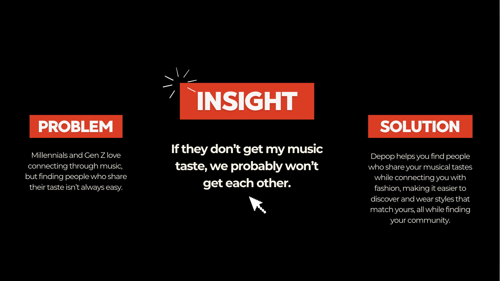
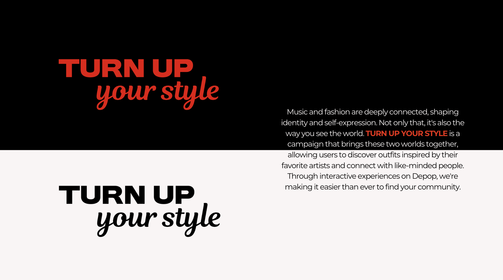
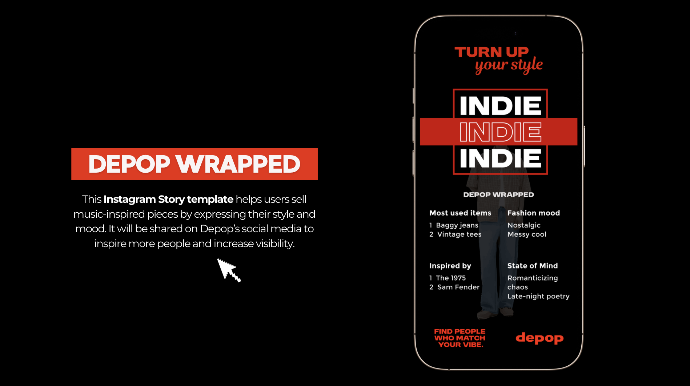
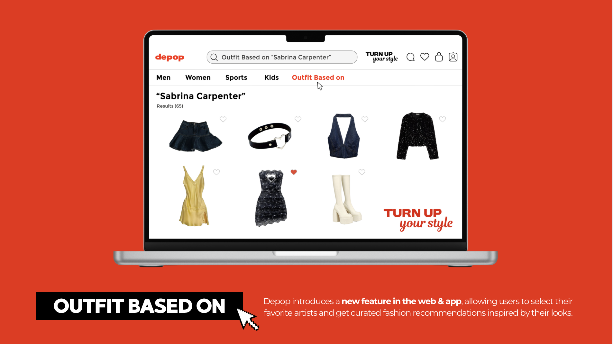
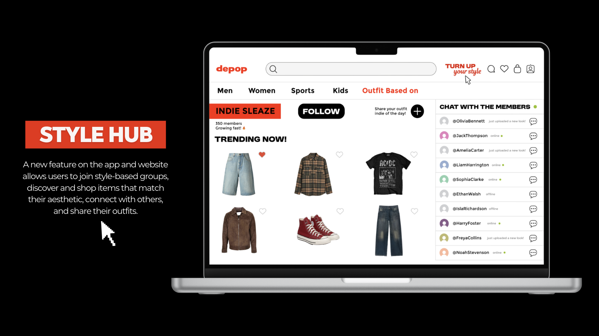
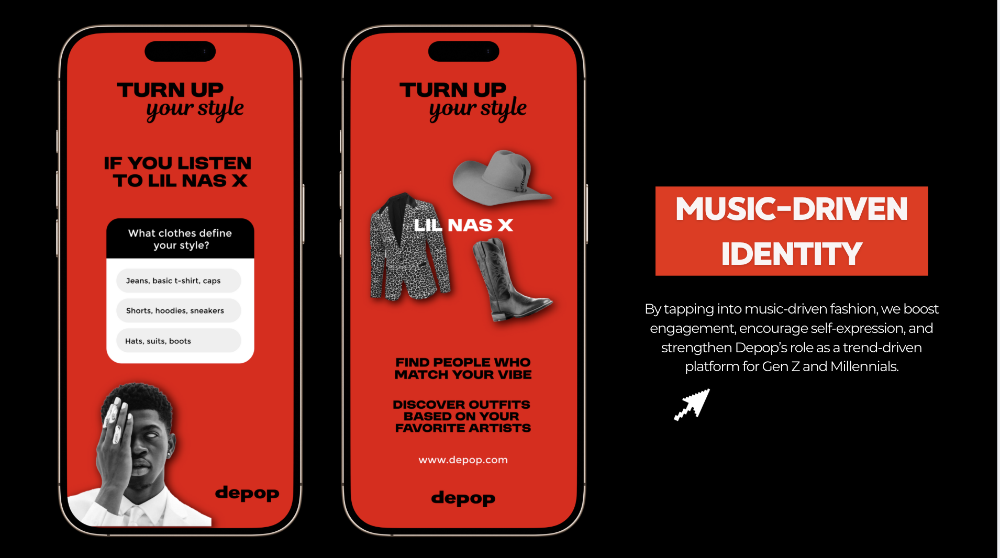
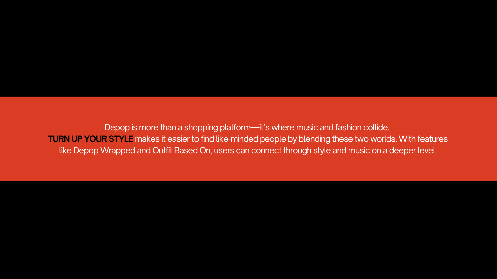

Depop
La dificultad principal radicó en identificar un insight auténtico y relevante para los públicos de Generación Z y Millennials. La conexión entre música y moda surgió tras un proceso de exploración conceptual que buscaba evitar propuestas superficiales. Desde el diseño, el proyecto implicó pensar en la experiencia del usuario dentro de una plataforma digital, desarrollando funciones que fueran tanto creativas como aplicables en un entorno real.






